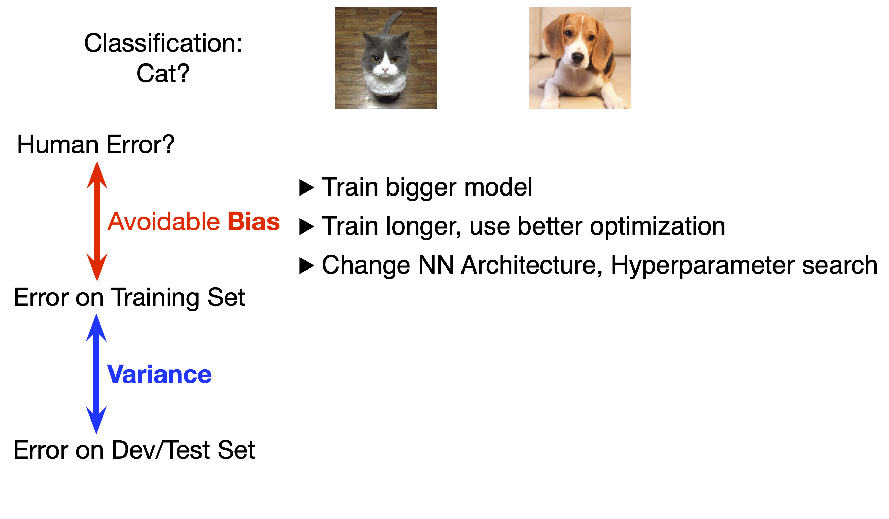
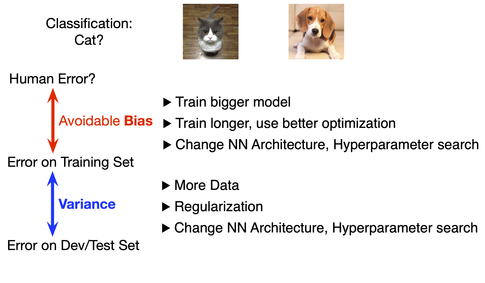

Deep Reinforcement Learning
6 - Temporal Difference Learning
Overview Lecture
For Known MDP:
General Policy Improvement Approach:
- Policy Evaluation
- Policy Improvement
In Contrast: Model-Free Approaches
- Prediction: Estimate the value function of an unknown MDP
- Monte-Carlo Method
- Temporal Difference Learning
- Model-free control (next week):
- Optimise the policy
Big picture: Solving an MDP
Goal: Maximize return
\[G_t = R_{t+1} + R_{t+2} + ... \]
When MDP is fully known, joint probability \(p(s', r | s,a)\):
- How environment develops and
- how reward is given.
Plus we fixed a policy how to act.
\[ v_{\pi}(s) \leftarrow \sum_{a \in \mathcal{A}} \pi (a|s) \sum_{r} \sum_{s' \in \mathcal{S}} p (r, s'|s,a) \Big(r + \dots \Big) \]
Big picture: Solving an MDP, Dynamic Programming
Goal: Maximize return
\[G_t = R_{t+1} + \gamma R_{t+2} + ... \]
- Use Bellman Equation for (recursive) backup.
- Model-Based Approach.
- Value function based Approach.
Called bootstrapping.
\[ v_{\pi}(s) \leftarrow \sum_{a \in \mathcal{A}} \pi (a|s) \sum_{r} \sum_{s' \in \mathcal{S}} p (r, s'|s,a) \Big(r + \gamma v_{\pi}(s') \Big) \]
Big picture: Monte-Carlo Sampling
Goal: Maximize return
\[G_t = R_{t+1} + \gamma R_{t+2} + ... \]
- Model-free Approach.
- Sample from experience.
- Exploit sequential data.
Sample along path (Monte Carlo)
\[ v_\pi(s) \leftarrow \mathbb{E}_\pi (G_t | S_t=s ) \]
Recap – Using Monte-Carlo Method for Reinforcement Learning
Monte-Carlo:
- is a model-free approach that does not use knowledge of MDP (neither transition probabilities nor reward distribution),
- learns directly from full episodes of experience and the obtained return in these
- as it uses the straightforward idea to estimate the mean return for a state from these episodes.
One drawback: requires episodic MDPs as the episodes must terminate.
Recap – Monte-Carlo Methods
… learns from episodes of raw experience without modeling the environmental dynamics.
MC methods computes the observed mean return as an approximation of the expected return.
Computation of the empirical return \(G_t\) requires complete episodes \(S_1, A_1, R_2, ... , S_T\):
\[ v(s) = \frac{\sum_{t=1}^T \mathbb{1}[S_t = s] G_t}{\sum_{t=1}^T \mathbb{1}[S_t = s]}, q(s, a) = \frac{\sum_{t=1}^T \mathbb{1}[S_t = s, A_t = a] G_t}{\sum_{t=1}^T \mathbb{1}[S_t = s, A_t = a]} \]
Recap – Incremental Monte-Carlo Updates
Update \(v(s)\) incrementally after episode \(S_1, A_1, R_2, \dots, S_T\)
For each state \(S_t\) with return \(G_t\)
\[ \begin{eqnarray*} N(S_t) &\leftarrow& N(S_t) + 1 \\ v(S_t) &\leftarrow& v(S_t) + \frac{1}{N(S_t)} (G_t - v(S_t)) \end{eqnarray*} \]
In non-stationary problems, it can be useful to track a running mean, i.e. forget old episodes:
\[ v(S_t) \leftarrow v(S_t) + \alpha (G_t - v(S_t)) \\ \]
Temporal Difference Learning – Backup Diagram
Goal: Maximize return
\[G_t = R_{t+1} + \gamma R_{t+2} + ... \]
- Model-free Approach.
- Sample from experience (Monte-Carlo).
- Exploit sequential data.
But: Bootstrap as in DP (use Bellman equation).
\[ v(S_t) \leftarrow v(S_t) + \alpha (R_{t+1} + \gamma v(S_t+1) - v(S_t)) \]
Reinforcement Learning Algorithms Overview
Temporal Difference Learning
Temporal Difference Learning
Temporal Difference …
- Learning is model-free: no knowledge on MDP transition or reward probabilities is needed
- methods also learn directly from episodes of experience
Bootstrapping
TD learning methods update targets with regard to existing estimates rather than exclusively relying on actual rewards and complete returns as in MC methods.
The key idea in TD learning is to update the value function \(v(S_t)\) towards an estimated return \(R_{t+1}+\gamma v(S_{t+1})\) (known as “TD target”).
From MC to Temporal Difference Learning
In both: Goal is to learn \(v_\pi\) online from experience under policy \(\pi\)
Incremental every-visit Monte-Carlo:
- Update value \(v(S_t)\) towards actual return \(\color{red}G_t\): \[v(S_t) \leftarrow v(S_t) + \alpha(\color{red}G_t\color{black} − v(S_t))\]
Simple temporal-difference learning algorithm TD(0):
- Update value \(v(S_t)\) towards estimated return \(\color{blue}R_{t+1} + \gamma v(S_{t+1})\):
\[v(S_t) \leftarrow v(S_t) + \alpha (\color{blue}R_{t+1} + \gamma v(S_{t+1}) \color{black}- v(S_t))\]
Temporal Difference Learning
\[v(S_t) \leftarrow v(S_t) + \alpha (\color{blue}R_{t+1} + \gamma v(S_t+1) \color{green}- v(S_t)\color{black})\]
TD Target
\(\color{blue}R_{t+1} + \gamma v(S_t+1)\) is called the TD target.
TD Error
\(\delta_t = \color{blue}R_{t+1} + \gamma v(S_t+1) \color{green} - v(S_t)\) is called the TD error.
TD: Value Estimation
Update of the value function is regulated by the learning rate \(\alpha\).
In brief: TD means update a guess (of the value function) towards a guess (experiencing a single step and a guess of what follows):
\[\begin{align*} \text{MC: } v(S_t) &\leftarrow (1- \alpha) v(S_t) + \alpha G_t \\ v(S_t) &\leftarrow \fragment{v(S_t) + \alpha (G_t - v(S_t)) }\\ \text{TD: } v(S_t) &\leftarrow\fragment{ v(S_t) + \alpha (R_{t+1} + \gamma v(S_{t+1}) - v(S_t))} \end{align*}\]
Similarly for the Q-function: \[ q(S_t, A_t) \leftarrow q(S_t, A_t) + \alpha (R_{t+1} + \gamma q(S_{t+1}, A_{t+1}) - q(S_t, A_t)) \]
Tabular TD(0) for estimating \(v_\pi\)
\(\color{blue}\text{Agent part of the algorithm; } \color{red}\text{ Environment interaction}\)
Example: Driving Home
| State | Elapsed time | Predicted time to Go | Predicted total time |
|---|---|---|---|
| Leaving office, Friday at 6 | 0 | 30 | 30 |
| Reach car, raining | 5 | 35 | 40 |
| Exiting highway | 20 | 15 | 35 |
| small road, behind truck | 30 | 10 | 40 |
| Entering home street | 40 | 3 | 43 |
| Arrive home | 43 | 0 | 43 |
Example: Comparison Monte-Carlo and TD Approach
Monte-Carlo Approach
Changes recommended, MC (\(\alpha=1\)):
Temporal Difference Method
Changes recommended in TD (\(\alpha=1\)):
Example: Random Walk
- all episodes start in the center state \(C\),
- then proceed randomly left or right.
- Termination states are on the extreme left and extreme right.
- Reward: only given when terminating right (\(+1\)).
Value of a state is the probability of terminating in the right node.

Can you derive some of the state values?
\(v_\pi(C) = \frac{1}{2}\), and for states \(A\) through \(E\) these are \(\frac{1}{6}, \frac{2}{6}, \frac{3}{6}, \frac{4}{6}, \frac{5}{6}\).
Example: Compare MC and TD empirically
TD(0) Estimates for \(v_\pi\)
Learning Curves

ML Background: Bias-Variance Tradeoff
Bias-Variance Tradeoff – Interactive Visualization
Bias and Variance Tradeoff in ML: Classification
Underfitting
Original Data
Overfitting
For two classes (shown as red dots and blue crosses).
Bias and Variance
Bias and Variance Tradeoff in ML: Regression Problem
(Varoquaux u. a. 2022), see as well (Bishop 2006)
Bias and Variance Tradeoff in ML
Task – Compare different models
For a two-class classifier model, we find the following errors during training and when testing our model afterwards. Discuss the bias and variance of the models.
Task – Solution for different models
Bias and Variance
Bias
\(Bias^2(x) = \Big( \mathbb{E}[\hat{f}(x)] - f(x) \Big)^2\)
Source of Error in Bias
The error due to bias is taken as the difference between the expected (or average) prediction of our model and the correct value which we are trying to predict.
Bias measures how far off in general models’ predictions are from the correct value.
Variance
\(Variance(x) = \mathbb{E}\Big[\hat{f}(x) - \mathbb{E}[f(x)] \Big]\)
Source of Error in Variance
The error due to variance is taken as the variability of a model prediction for a given data point.
The variance is how much the predictions for a given point vary between different realizations of the model.
Dealing with Variance and Bias in Neural Network Models
 
Bias and Variance
Bias-Variance Trade-Off: Monte-Carlo
Aiming for estimated Return from that state: \(v(S_t) = \mathbb{E}[G_t]\)
Monte-Carlo: Update value \(v(S_t)\) toward actual return \(\color{red}G_t\)
\[v(S_t) \leftarrow v(S_t) + \alpha \big( \color{red}G_t^{(n)} \color{black} − v(S_t) \big) \]
Return \(\color{red}G_t^{(n)} \color{black} = R_{t+1} + \gamma R_{t+2} + \dots + \gamma^{T-1} R_{T}\) is unbiased estimate of \(v_\pi(S_t)\).
MC has high variance, zero bias
- Bias: \(Bias = \mathbb{E}[G_t] - v_\pi(S_t) = 0\), as \(v(S_t) = \mathbb{E}[G_t]\) as true sample from estimate
- but following a long trajectory can possibly induce a large variance
Bias-Variance Trade-Off: Difference using Return or TD target
- TD target is much lower variance than the return:
- Return depends on many random actions, transitions, rewards,
- TD target depends on one random action, transition, reward combined with stable estimate.
Bias-Variance Trade-Off: TD Learning
TD: Update value \(v(S_t)\) toward estimated returns \(R_{t+1} + \gamma v(S_{t+1})\)
\[v(S_t) \leftarrow v(S_t) + \alpha \big( \color{red}R_{t+1} + \gamma v(S_{t+1}) \color{black} − v(S_t) \big) \]
- True TD target: \(R_{t+1} + \gamma v_\pi(S_{t+1})\) is unbiased estimate of \(v_\pi(S_t)\)
- But: TD target \(R_{t+1} + \gamma v(S_{t+1})\) is biased estimate of \(v_\pi(S_t)\), as \[ Bias = \mathbb{E}[R_{t+1} + \gamma v_\pi(S_{t+1})] - v_\pi(S_t)\] \(R_{t+1}\) and \(S_{t+1}\) are directly from sample therefore unbiased. But \(v_\pi(S_{t+1})\) is an estimate and not true value function which can be biased.
- As an advantage: Estimate using value function for most part of the trajectory reduces variance.
Bias-Variance Trade-Off
MC has high variance, zero bias
- Good convergence properties
- Even with function approximation
- Not very sensitive to initial value
- Very simple to understand and use
TD has low variance, some bias
- Usually more efficient than MC
- TD(0) converges to \(v_\pi(s)\)
- More sensitive to initial value
Bootstrapping and Sampling
- Bootstrapping: update involves an estimate
- MC does not bootstrap
- DP bootstraps
- TD bootstraps
- Sampling: update samples an expectation
- MC samples
- DP does not sample
- TD samples

Temporal-Difference Learning
- TD is model-free (no knowledge of MDP) and learn directly from experience
- TD can learn from incomplete episodes, by bootstrapping
- TD can learn during each episode
Temporal difference learning – \(q\)-function
- We can apply the same idea to action values – when dynamics are unknown, this is much more important
- Temporal-difference learning for action values:
- Update value \(q_t(S_t, A_t)\) towards estimated return \(\color{blue}R_{t+1} + \gamma q(S_{t+1}, A_{t+1})\)
This algorithm is known as SARSA, because it uses \((S_t, A_t, R_{t+1}, S_{t+1}, A_{t+1})\).
Task – TD - MC direct Comparison
Calculate the values for the two possible states given the experience collected (\(\gamma = 1\); for TD you might want to start with \(B\) – why?).
Monte-Carlo
Calculation of \(v_\pi(s)\)
\[ v(s) = \frac{\sum_{t=1}^T \mathbb{1}[S_t = s] G_t}{\sum_{t=1}^T \mathbb{1}[S_t = s]}\]
Observed Episodes
| \(A \rightarrow 0, B \rightarrow 0\) | \(B \rightarrow 1\) |
| \(B \rightarrow 1\) | \(B \rightarrow 1\) |
| \(B \rightarrow 1\) | \(B \rightarrow 1\) |
| \(B \rightarrow 1\) | \(B \rightarrow 0\) |
Temporal Difference Learning
Update of \(v_\pi(s)\)
\[ \begin{eqnarray*} v(S_t) &\leftarrow& v(S_t) + \alpha (\color{blue}R_{t+1} + \\ && \color{blue}\gamma v(S_{t+1}) \color{black}- v(S_t)) \end{eqnarray*}\]
Task – Value Function
Episodes
\(A \rightarrow 0, B \rightarrow 0\); \(B \rightarrow 1\); \(B \rightarrow 1\); \(B \rightarrow 1\); \(B \rightarrow 1\); \(B \rightarrow 1\); \(B \rightarrow 1\); \(B \rightarrow 0\)
Monte-Carlo
Calculation of \(v_\pi(s)\)
\[ \begin{eqnarray*} v(A) &=& \frac{0}{1} = 0 \\ v(B) &=& \frac{6}{8} = 0.75 \end{eqnarray*} \]
Temporal Difference Learning
\(v(S_t) \leftarrow v(S_t) + \alpha (\color{blue}R_{t+1} \color{black} + \color{green} \gamma v(S_t+1) \color{black}- v(S_t))\)
- \(v(B)\) (easier, always terminating):
\[ v(B) = \frac{6}{8} = 0.75 \]
- only one episode with \(A\), but use value estimate for ending in \(B\):
\[ v(A) = \color{blue}0 \color{black} + \color{green}0.75 \color{black}= 0.75 \]
Batch Learning – Using limited Data for Learning
Tabular MC and TD converge to \(v_\pi\) as we gather unlimited experience which we usually can’t gather. How do these behave with limited experience?
Batch Setting
We collect multiple episodes \(1\) to \(K\), : \[ \text{episode } k: S_1^k, A_1^k, R_2^k, ..., S_{T_k}^k \]
We can repeatedly use each episode \(k \in [1,K]\) for training.
This means: we sample from an empirical model.
Underlying MDP for the example

Could be derived from experiences: Maximum-Likelihood Estimation – which is the most likely MDP producing such data?
Differences in batch solutions
Monte-Carlo
MC converges to best mean-squared fit for the observed returns:
\[ \sum_{k=1}^K \sum_{t=1}^{T_k} \big( G_t^k -v(S_t^k) \big)^2 \]
For the example: \(v(A) = 0\)
Temporal Difference
TD converges to solution of maximum likelihood Markov model, given the observed data.
- Solution to the empirical MDP \((\mathcal{S,A}, p, \gamma)\) that best fits the data
- In the AB example: \(p(S_{t+1} = B | S_t = A) = 1\), and therefore \(v(A) = v(B) = 0.75\)
Detail: Temporal Difference Learning
TD(0) converges to solution of maximum likelihood Markov model
Solution to the MDP \(⟨\mathcal{S, A}, p, \gamma⟩\) that best fits the data \[ p( s' | s,a ) = \frac{1}{N(s,a)} \sum_{k=1}^K\sum_{t=1}^{T_k}\mathbb{1} (s_t^k, a_t^k, s_{t+1}^k = s, a, s') \]
\[ r( s,a ) = \frac{1}{N(s,a)} \sum_{k=1}^K\sum_{t=1}^{T_k}\mathbb{1} (s_t^k, a_t^k = s, a) r_t^k \]
In the AB example, \(v(A) = 0.75\)
References